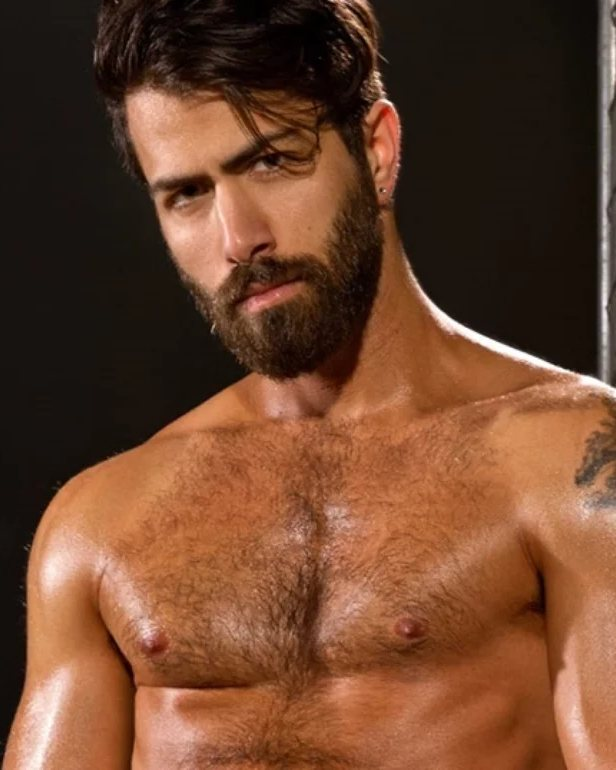
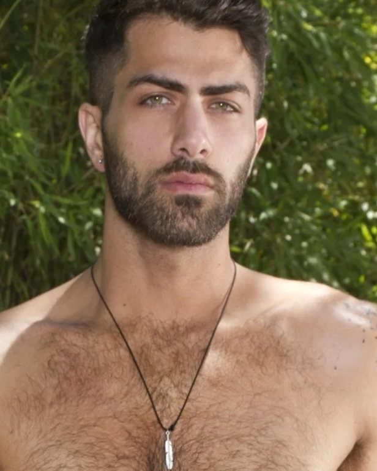
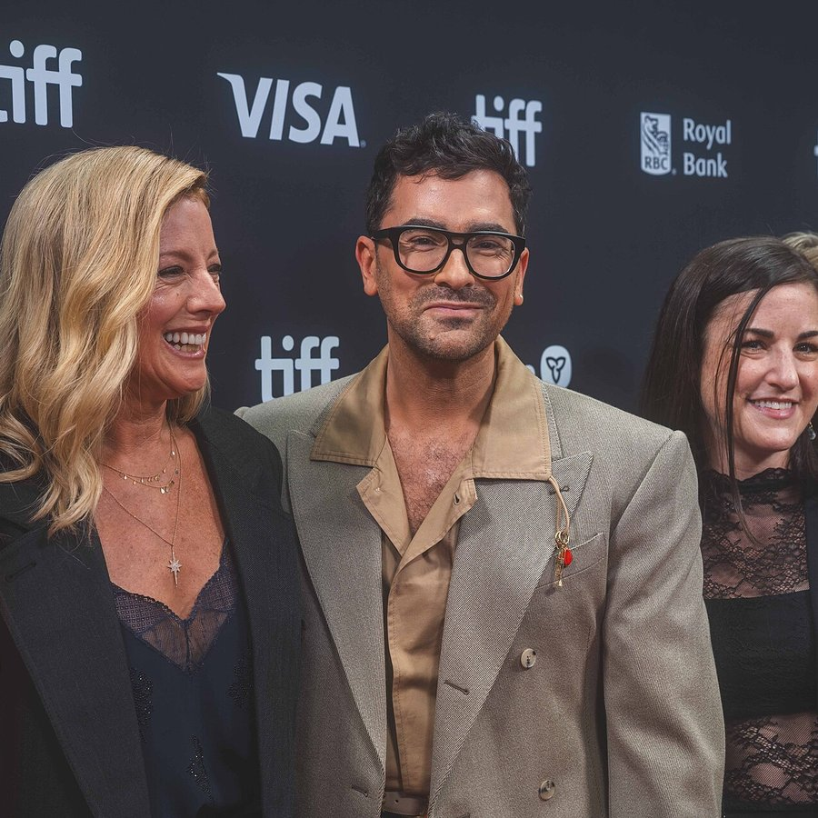
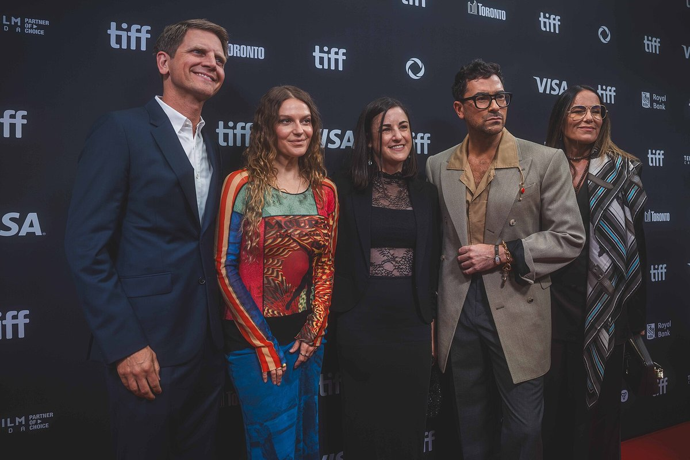

2015 – 2020
Schitt’s Creek
David Rose. Co-creator with Eugene Levy; writer, director and executive producer across the run.

Fan archive · Since 2026
Actor, writer, director and producer. Six seasons as David Rose, a shelf of awards for Schitt’s Creek, and a second act behind the camera that began with Good Grief. A quiet, independent record of the work.
Born
Toronto, 1983
Breakout
Schitt’s Creek
Primetime Emmys
Four in one night
Order of Canada
Member, 2023

TIFF, September 2025 · Photograph by Patrick.suechan
01 — About
Daniel Joseph Levy was born in Toronto on 9 August 1983, the son of Eugene Levy and Deborah Divine, and grew up in a house where the family business was comedy. He came to television in 2006 as a co-host of MTV Live, then spent four years writing, producing and hosting The After Show and its spinoffs before stepping behind the camera for good.
In 2015 he co-created Schitt’s Creek with his father and played David Rose across six seasons — a performance of enormous precision built out of small gestures, a raised brow and a wardrobe that became its own character. The final season swept the 2020 Primetime Emmys with nine wins. Levy took four of them in a single night, for acting, writing, directing and producing: the most won by one person at a single ceremony.
Good Grief, his feature directorial debut — written, produced and starred in by Levy — reached Netflix in January 2024. Before it came The Big Brunch, the cooking competition he created and hosted, and behind both sits Not A Real Production Company, the banner he founded in 2022 and which signed a first-look television deal with Netflix in 2026. He was named a Member of the Order of Canada in 2023.
02 — Selected work
A short shelf rather than a full filmography. Credits below are the ones the work is best known for; dates are release years.
2015 – 2020
David Rose. Co-creator with Eugene Levy; writer, director and executive producer across the run.
2020
John, in the holiday comedy opposite Kristen Stewart and Mackenzie Davis.
2022
Creator, host and judge, alongside Sohla El-Waylly and Will Guidara.
2023
Marc Dreyfus — and his feature debut as writer, director and producer.
2023
Thomas Molloy, in the fourth and final series.
2023
Vic, in Disney’s ensemble take on the theme-park attraction.
2024
Andy Warhol, in Jerry Seinfeld’s cereal-empire comedy.
2025
Joel, in the animated feature — credited as Daniel Levy.
2026
Nicky Dardano, in the series he co-created.
03 — Press frames
Two frames from the 2025 Toronto International Film Festival, where Levy produced the Lilith Fair documentary. Click either one to view it full size.


Both photographs by Patrick.suechan, licensed CC BY-SA 4.0 via Wikimedia Commons, and cropped here for layout. Adapted versions are shared under the same licence — the originals, with full metadata, are on Wikimedia Commons.
04 — Contact
Fan mail belongs with him; anything professional belongs with his representatives. This page points at both — it does not forward either.
Direct
There is no public postal address for fan mail, and no agency that passes letters along. The reliable route is social — a reply is never promised, but the messages that arrive there are the ones that get read.
Professional
Levy is represented by CAA, and speaking engagements are handled through CAA Speakers, which publishes the booking route directly.
For interviews, premieres, brand work or festival appearances, go through the agency above with dates, outlet and deadline attached. Nothing sent through this fan page reaches him or his team.
Open the CAA Speakers page